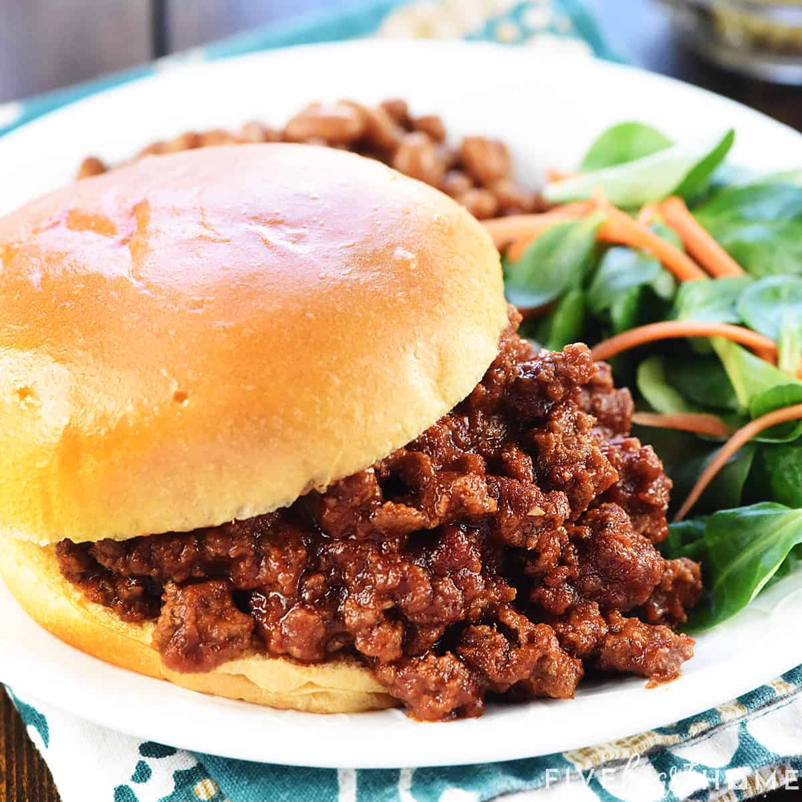

Sloppy Joes

Description
Have some more Sloppy Joes. I made 'em extra sloppy for yous. I know how yous kids like 'em sloppy!
Ingredients
- 1 pound lean ground beef
- ¼ cup chopped onion
- ¼ cup chopped green bell pepper
- ½ teaspoon garlic powder
- 1 teaspoon prepared yellow mustard
- ¾ cup ketchup
- 3 teaspoons brown sugar
- salt to taste
- ground black pepper to taste
Steps
- In a medium skillet over medium heat, brown the ground beef, onion, and green pepper; drain off liquids.
- Stir in the garlic powder, mustard, ketchup, and brown sugar; mix thoroughly. Reduce heat, and simmer for 30 minutes. Season with salt and pepper.